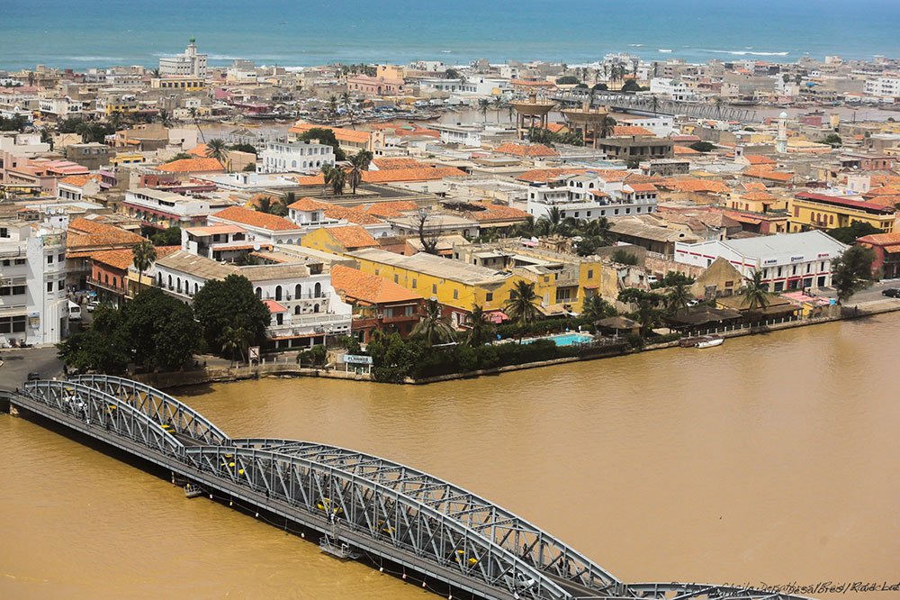
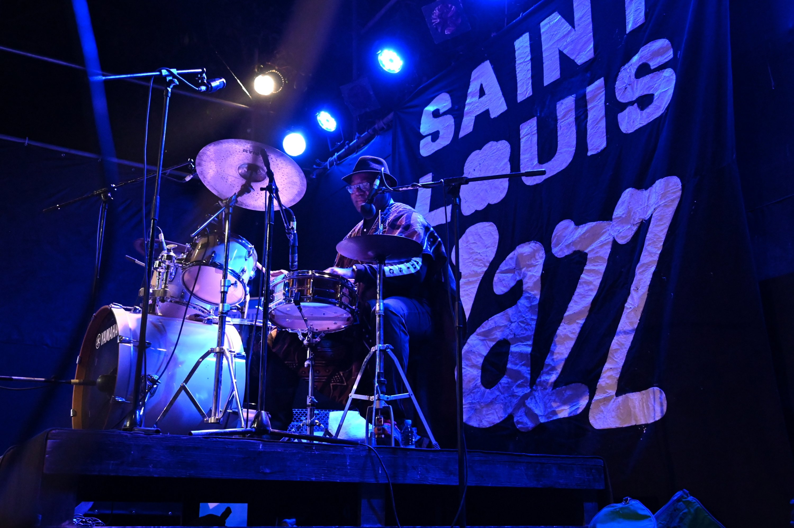
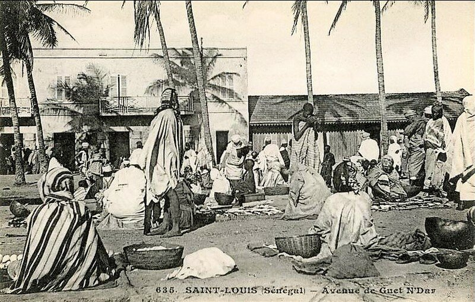

Découvrez l'histoire, la culture et le patrimoine de cette ville unique.
Saint-Louis est une ville historique située au nord du Sénégal, connue pour son architecture coloniale, ses ponts emblématiques, et son riche patrimoine culturel. Fondée au 17ème siècle, elle a été la première colonie française en Afrique de l'Ouest et est aujourd'hui classée au patrimoine mondial de l'UNESCO.
Saint-Louis offre une multitude d'attractions touristiques, des sites historiques aux plages magnifiques. Explorez les hôtels, restaurants, et les lieux incontournables.
Saint-Louis est un centre culturel dynamique avec des événements tout au long de l'année, comme le célèbre Festival de Jazz.
Fondée en 1659 par les colons français, Saint-Louis est l'une des plus anciennes villes d'Afrique de l'Ouest et a joué un rôle central dans l'histoire coloniale de la région. La ville a été la première capitale de la colonie du Sénégal et a servi de base pour l'expansion française en Afrique de l'Ouest. Saint-Louis est située sur une île à l'embouchure du fleuve Sénégal, ce qui en a fait un important centre commercial et administratif.
Son architecture coloniale, caractérisée par des bâtiments aux façades colorées et des balcons en fer forgé, témoigne de son riche passé historique. La ville a conservé de nombreux monuments et structures datant de l'époque coloniale, dont certains sont inscrits au patrimoine mondial de l'UNESCO. En plus de son importance historique, Saint-Louis est également un centre culturel et artistique dynamique, accueillant des événements tels que le célèbre Festival de Jazz de Saint-Louis.
Aujourd'hui, la ville de Saint-Louis continue de fasciner les visiteurs par son charme intemporel et son ambiance unique, mêlant histoire, culture et traditions. Elle demeure un symbole de la rencontre entre l'Afrique et l'Europe, une ville où le passé et le présent coexistent harmonieusement, offrant aux visiteurs une expérience riche et authentique.
Préparez votre visite à Saint-Louis avec nos conseils pratiques sur les transports, le climat et bien plus encore.